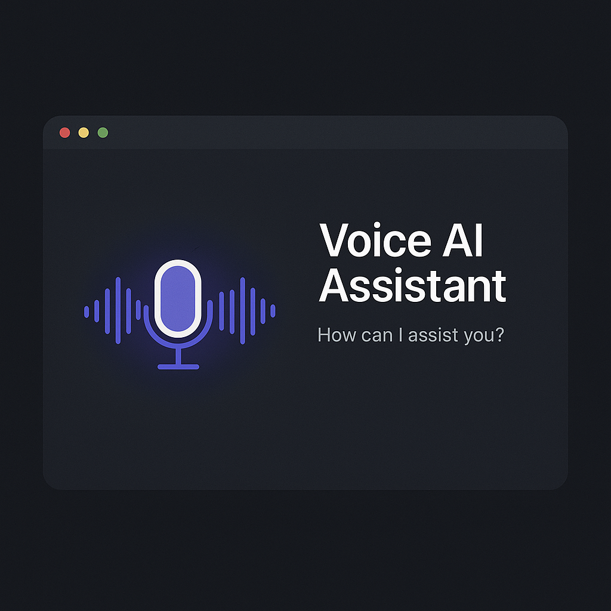

Featured Projects

Sign Language Converter
98% accurate CNN+OpenCV sign-to-text & text-to-voice—500+ users.

Voice AI Agent
LangChain & Groq API voice-activated assistant with secure activation.

RAG Pipeline Diagram
Vector retrieval → LLM flow for real-time Q&A.